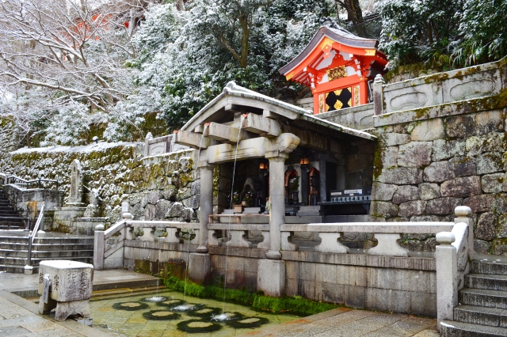

清水寺
京都には多くの観光地があります、今回は京都の観光地を厳選して3つ紹介します。１つ目は清水寺です。
清水寺について。
清水寺は、京都市東山区にある歴史ある仏教寺院で、778年に創建されました。正式には「音羽山清水寺」といい、観音菩薩を本尊とする天台宗の寺院です。日本を代表する観光地のひとつで、1994年にはユネスコ世界文化遺産にも登録されました。特に「清水の舞台」として知られる本堂の舞台は、断崖にせり出すように建てられており、四季折々の美しい景色を一望できます。
清水寺は、京都市東山区にある歴史ある仏教寺院で、778年に創建されました。正式には「音羽山清水寺」といい、観音菩薩を本尊とする天台宗の寺院です。日本を代表する観光地のひとつで、1994年にはユネスコ世界文化遺産にも登録されました。特に「清水の舞台」として知られる本堂の舞台は、断崖にせり出すように建てられており、四季折々の美しい景色を一望できます。
清水寺の名前の由来ともなっている「音羽の滝」は、寺の境内にある清らかな湧き水が流れる滝です。滝は三筋に分かれて流れており、それぞれ「学業成就」「恋愛成就」「健康長寿」のご利益があるとされています。訪れる人々は柄杓（ひしゃく）を使ってこの水を飲み、願いごとの成就を祈ります。古来より「清水」として親しまれてきた、神聖な場所です。

清水寺の入口に堂々と構える仁王門は、朱塗りの美しい楼門で、重要文化財に指定されています。室町時代に再建されたとされるこの門は、高さ約10メートルにもおよび、左右には金剛力士像（仁王像）が安置され、邪気を払う役目を担っています。力強さと荘厳さを感じさせるこの門は、清水寺の象徴的存在のひとつであり、訪れる人々を出迎える重要な建造物です。
伏見稲荷大社
変更前テキスト
伏見稲荷大社は、京都市伏見区にある全国約3万社の稲荷神社の総本宮で、五穀豊穣・商売繁盛・家内安全などのご利益で知られています。創建は奈良時代の711年と伝えられ、稲荷信仰の中心地として、古くから多くの人々の信仰を集めてきました。
伏見稲荷大社の最大の特徴は、無数の朱塗りの鳥居が山道に連なる「千本鳥居」です。この鳥居は、願いが成就したお礼として奉納されたもので、現在でも個人や企業によって新たに奉納されています。連なる鳥居のトンネルは神秘的な雰囲気を醸し出し、訪れる人々を神聖な世界へと誘います。
金閣寺
変更前テキスト
金閣寺（正式名称：鹿苑寺〈ろくおんじ〉）は、京都市北区にある臨済宗相国寺派の寺院で、14世紀に足利義満によって建立されました。建物の外壁が金箔で覆われた華麗な三層の舎利殿「金閣」は、池に映る姿が美しく、日本を代表する観光名所として多くの人々を魅了しています。
夕佳亭（せっかてい）は、金閣寺の境内にある江戸時代に建てられた茶室で、「夕日に映える景色が佳（よ）い」としてその名がつけられました。質素で落ち着いた佇まいの中に美を感じるこの茶室からは、金閣を望むことができ、四季折々の風景とともに静寂なひとときを楽しむことができます。
まとめ
京都にはほかにも多くの観光地があります。
そのため京都に行く際は十分に下調べをしてから行くようにしましょう。
- 銀閣寺
- 哲学の道
- 永観堂
- 錦市場
- 東寺
そのため京都に行く際は十分に下調べをしてから行くようにしましょう。
{kind=link}